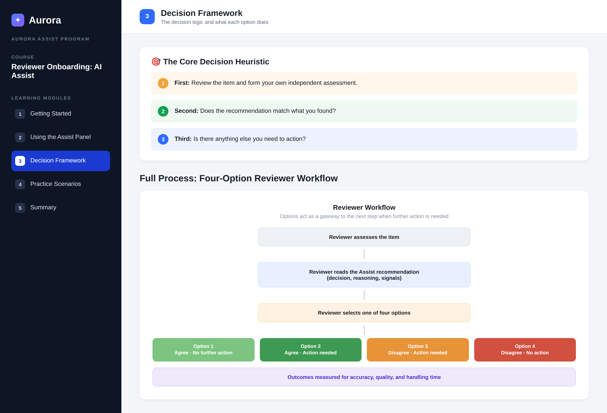

I design learning experiences that help people adopt new tools and processes with confidence — from AI-tool rollouts and reviewer onboarding to compliance and multilingual training. I work across the full ADDIE and SAM lifecycle in Articulate Storyline 360, Rise 360, and enterprise LMS platforms.
I am a learning and development specialist with experience designing scalable, high-impact training for large, fast-moving operations teams. My recent focus is enabling people to work effectively alongside AI tools: translating complex new workflows into clear, confidence-building learning that measurably improves adoption, quality, and efficiency. I hold Google UX Design and Program Management certificates and am completing an MSc in Artificial Intelligence for Business. I design and facilitate in English, Spanish, and French.
Full-lifecycle instructional design, from needs analysis through build, launch, and measurement.
Interactive modules, scenario-based practice, knowledge checks, and job aids built in Articulate Storyline 360 and Rise 360, published to SCORM and xAPI.
Needs assessments with SMEs, learning objectives, blended solutions, and evaluation strategies grounded in adult-learning principles (ADDIE / SAM).
Change-management training for new AI tools and workflows, helping teams adopt new ways of working while keeping human judgment in the lead.
Administration and publishing across enterprise LMS/LCMS platforms, managing the full content lifecycle from concept through revision to retirement.
Assessment design, knowledge checks, quality frameworks, performance dashboards, and impact reporting to prove learning outcomes.
Designing and facilitating learning across English, Spanish, and French for international and distributed audiences.
A demonstration project built to showcase my design approach for AI-tool enablement. Content is fictional and created specifically for this portfolio, so it is fully shareable.
A short change-training course that introduces a new AI assistant to an operations team. The home page sets expectations, scopes the learning to "only what is new," and frames a clear five-module journey.
A content module using a "What's New vs. What Stays the Same" pattern to lower resistance, explicit learning objectives, and an interactive knowledge check that must be passed to unlock the next module.

Complex decision logic distilled into a three-step heuristic and a colour-coded process diagram, so learners can internalise a four-option workflow at a glance rather than memorising rules.
Real projects, described without confidential details. Metrics are drawn from my actual results.
A large operations team needed to adopt a new AI-assisted workflow quickly, without losing quality or independent judgment.
Designed a blended change-training program: a scoped e-learning course, a decision heuristic, scenario practice, and job aids, all built around adult-learning principles and validated with SMEs.
Faster, more confident adoption of the new tool with quality maintained through built-in knowledge checks and practice.
New-hire ramp-up was slow and inconsistent across a distributed, multilingual team.
Rebuilt the onboarding journey with clearer objectives, chunked modules, hands-on practice, and measurement at each stage; localised for multiple languages.
Measurably faster time-to-productivity and a more consistent learner experience across regions.
Training quality was hard to measure and varied between facilitators and cohorts.
Established a quality framework with defined KPIs, weekly evaluations, and a feedback loop, plus dashboards to surface trends and target improvements.
Consistent quality standards, clearer visibility for stakeholders, and a repeatable improvement cycle.
Manual, repetitive learning-operations tasks were consuming capacity that could be spent on design.
Mapped the processes, then designed and implemented automations (workflow orchestration and integrations) to remove manual steps and connect learning systems.
Reclaimed capacity and reduced errors, freeing time for higher-value instructional design work.
A practical blend of ADDIE and SAM, adapted to fast-moving environments.
Needs analysis with SMEs and data
Objectives, storyboard, assessment plan
Build in Storyline / Rise, iterate
Publish to LMS, launch, support
Measure impact, refine, retire